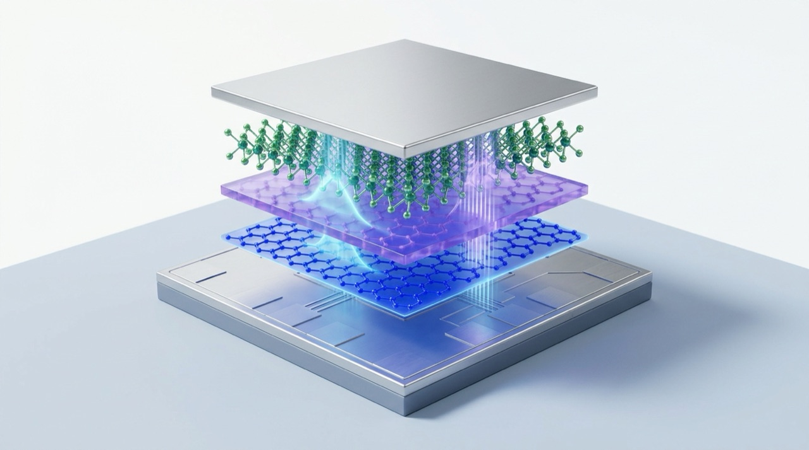

신개념 나노전자소자 (Emerging Nanoelectronics)
원자 단위의 ‘나노 레고’ 이종접합으로 기존 트랜지스터를 뛰어넘는 새로운 물리와 소자를 개척합니다.

왜 중요한가요?
기존 반도체는 결정 격자 크기가 맞지 않으면 서로 쌓을 수 없었습니다. 반면 2차원 소재는 도체·절연체·반도체를 마치 ‘원자 단위 레고 블록’처럼 자유롭게 쌓을 수 있어, 기존 실리콘에서는 불가능했던 양자 터널링·다치 논리·재구성 소자 등 완전히 새로운 차세대 전자소자를 만들어낼 수 있습니다.
ONE 1ab 핵심 연구 방향
- 수직 반데르발스 이종접합 기반 양자 터널링 및 신기능 나노소자 설계
- 다치 논리(Multi-Valued Logic) 및 전기적 재구성 가능 트랜지스터 구현
- 나노 계면에서의 전하 수송 메커니즘과 새로운 소자 물리 규명
핵심 작동 원리
- 반데르발스 수직 적층: 그래핀(도체), h-BN(절연체), TMD(반도체)를 원자 수준의 매끈한 계면으로 결합합니다.
- 양자 터널링 및 급격한 스위칭: 원자 한두 층 두께의 장벽을 정밀 설계해 터널 트랜지스터(TFET)와 부성 미분 저항(NDR) 같은 양자 현상을 활용합니다.
- 기능 재구성(Reconfigurable): 게이트 전압만으로 하나의 소자가 n형·p형·다이오드·메모리 역할을 실시간으로 전환할 수 있습니다.
기대 응용 분야
다치 논리(MVL) 반도체
0과 1을 넘어 3진·4진 연산으로 칩 면적과 배선을 획기적으로 절감
하드웨어 재구성 칩
상황에 따라 회로 기능을 즉석에서 바꾸는 유연한 보안·AI 칩
초저전압 스위칭 소자
기존 열적 한계(60 mV/dec)를 뛰어넘는 차세대 초절전 소자